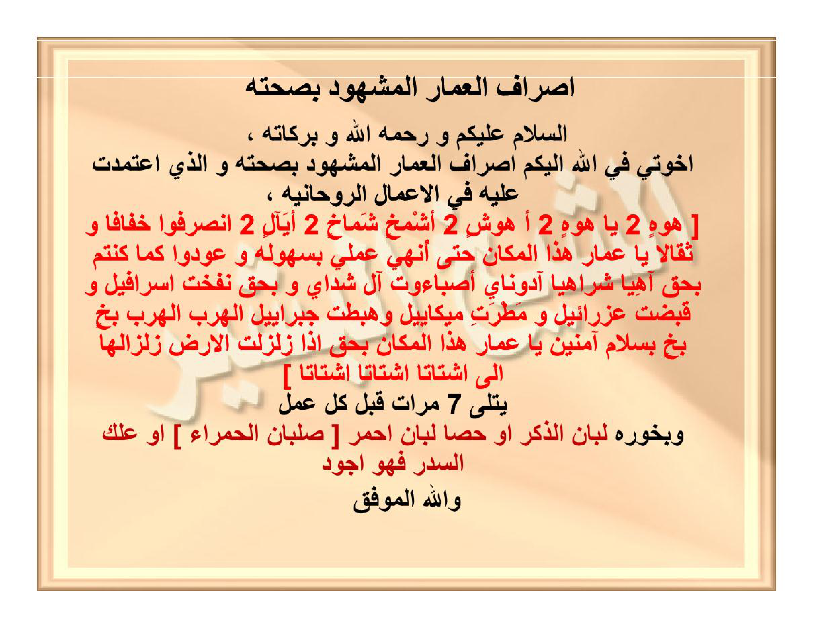

HALAMAN 36 — ISHRĀFUL-'UMMĀRIL-MASYHŪDU BISHIHHATIHĪ — إِصْرَافُ الْعُمَّارِ الْمَشْهُودُ بِصِحَّتِهِ
arab
إِصْرَافُ الْعُمَّارِ الْمَشْهُودُ بِصِحَّتِهِ
السَّلَامُ عَلَيْكُمْ وَرَحْمَةُ اللهِ وَبَرَكَاتُهُ ،
إِخْوَتِي فِي اللهِ إِلَيْكُمْ إِصْرَافَ الْعُمَّارِ الْمَشْهُودَ بِصِحَّتِهِ وَالَّذِي اعْتَمَدْتُ عَلَيْهِ فِي الْأَعْمَالِ الرُّوحَانِيَّةِ ،
[ هَوْهٍ ٢ يَا هَوْهٍ ٢ أَهُوشٍ ٢ أَشْمَخٍ شَمَاخٍ ٢ أَيَالٍ ٢ اِنْصَرِفُوا خِفَافًا وَثِقَالًا يَا عُمَّارَ هَذَا الْمَكَانِ حَتَّى أُنْهِيَ عَمَلِي بِسُهُولَةٍ وَعُودُوا كَمَا كُنْتُمْ بِحَقِّ آهِيًّا شَرَاهِيًّا آدُونَايَ أَصْبَاؤُوتَ آلِ شَدَّايَ وَبِحَقِّ نَفْخَةِ إِسْرَافِيلَ وَقَبْضَةِ عِزْرَائِيلَ وَمَطْرَةِ مِيكَائِيلَ وَهَبْطَةِ جَبْرَائِيلَ الْهَرَبَ الْهَرَبَ بَخٍ بَخٍ بِسَلَامٍ آمِنِينَ يَا عُمَّارَ هَذَا الْمَكَانِ بِحَقِّ إِذَا زُلْزِلَتِ الْأَرْضُ زِلْزَالَهَا إِلَى أَشْتَاتًا أَشْتَاتًا أَشْتَاتًا ]
يُتْلَى ٧ مَرَّاتٍ قَبْلَ كُلِّ عَمَلٍ
وَبَخُورُهُ لُبَانُ الذَّكَرِ أَوْ حَصَا لُبَانٍ أَحْمَرَ [ صُلْبَانُ الْحَمْرَاءِ ] أَوْ عِلْكُ السِّدْرِ فَهُوَ أَجْوَدُ
وَاللهُ الْمُوَفِّقُ
latin
Ishrāful-'ummāril-masyhūdu bishihhatihī.
As-salāmu 'alaikum wa rahmatullāhi wa barakātuhū,
Ikhwatī fillāhi ilaikum ishrāfal-'ummāril-masyhūda bishihhatihī wal-ladzi'tamadtu 'alaihi fil-a'mālir-rūhāniyyati,
[ Hauhin 2 Yā Hauhin 2 Ahūsyin 2 Asymakhin Syamākhin 2 Ayālin 2 insharifū khifāfan wa tsiqālan yā 'ummāra hādzal-makāni hattā unhiya 'amalī bisuhūlatin wa 'ūdū kamā kuntum bihaqqi Āhiyyan Syarāhiyyan Ādūnāya Ashbā'ūta Āli Syaddāya wa bihaqqi nafkhati Isrāfīla wa qabdhati 'Izrā'īla wa mathrati Mīkā'īla wa habthati Jabrā'īla al-haraba al-haraba bakhin bakhin bisalāmin āminīna yā 'ummāra hādzal-makāni bihaqqi idzā zulzilatil-ardhu zilzālahā ilā asytātan asytātan asytātan ]
Yutlā 7 marrātin qabla kulli 'amalin.
Wa bakhūruhū lubānudz-dzakari au hashā lubānin ahmara [ shulbānul-hamrā'i ] au 'ilkus-sidri fahuwa ajwadu.
Wallāhul-muwaffiqu.
Terjemahan
Ishrāful-'Ummār (pemindahan penghuni halus tempat) yang telah disaksikan kesahihannya.
Assalamu'alaikum warahmatullahi wabarakatuh,
Wahai saudara-saudaraku karena Allah, inilah untuk kalian bacaan Ishrāful-'Ummār yang telah disaksikan kesahihannya dan yang selalu aku jadikan pegangan dalam amalan-amalan ruhani:
[ Hauhin 2×, Yā Hauhin 2×, Ahūsyin 2×, Asymakhin Syamākhin 2×, Ayālin 2×; berpindahlah kalian baik dalam keadaan ringan maupun berat, wahai para penghuni halus ('ummār) tempat ini, hingga aku menyelesaikan amalanku dengan mudah, dan kembalilah kalian sebagaimana keadaan kalian semula, dengan hak Āhiyyan Syarāhiyyan Ādūnāya Ashbā'ūta Āli Syaddāya, dan dengan hak tiupan sangkakala Israfil, genggaman pencabutan Izrail, curahan hujan Mikail, serta turunnya Jibril; menyingkirlah, menyingkirlah, بَخٍ بَخٍ (dengan penuh kerelaan/kemuliaan), dengan keselamatan lagi dalam keadaan aman wahai para penghuni tempat ini, dengan hak: Apabila bumi diguncangkan dengan guncangannya yang dahsyat (QS. az-Zalzalah: 1) ... dibaca hingga firman-Nya: dalam keadaan terpencar-pencar (asytātan), terpencar-pencar (asytātan), terpencar-pencar (asytātan) (QS. az-Zalzalah: 6) ].
Dibaca sebanyak 7 kali sebelum setiap amalan.
Adapun bukhurnya (wewangian asapnya) adalah lubān dzakar (kemenyan Arab jantan), atau hashā lubān merah [ shulbān merah ], atau getah pohon bidara ('ilkus-sidr) maka itu lebih utama.
Dan Allah-lah Yang Maha Memberi taufik.
Syarah dan Penjelasan
1. **Verifikasi 3× vs `hal_36.png` — Koreksi Transliterasi `sy` dan `kh` serta Lafaz Kitab**:
- Sesuai kaidah baku yang telah ditetapkan (huruf ش wajib ditulis `sy` bukan `sh`, dan huruf خ wajib ditulis `kh` bukan `x`), lafaz `أَهُوشٍ` dan `أَشْمَخٍ شَمَاخٍ` yang pada draf ditulis *Ahwashin* dan *Asymaxin Syamāxin* telah dikoreksi menjadi **`Ahūsyin`** (pada scan diberi harokat kasrah di bawah ha' sebelum wawu) dan **`Asymakhin Syamākhin`**.
- Lafaz `آهِيًّا شَرَاهِيًّا` pada scan ditulis dengan alif di akhir (`آهيا شراهيا`), dan di bagian bawah halaman kalimat penutup `وَاللهُ الْمُوَفِّقُ` yang terlewat pada terjemahan draf telah dikembalikan utuh.
- Subjudul tambahan `* التَّكْرَارُ:` dan `* الْبَخُورُ:` pada draf yang tidak ada di halaman kitab asli telah dihapus sehingga baris-per-baris murni mengikuti kitab.
2. **Makna Asma Suryaniyyah/Ibraniyyah & Empat Tugas Malaikat Muqarrabin**:
- **`أَشْمَخٍ شَمَاخٍ`** (*Asymakhin Syamākhin*): Dalam literatur hikmah klasik bermakna *al-'Aliyyul-'Azhīm* (Dzat Yang Maha Tinggi lagi Maha Agung).
- **`آهِيًّا شَرَاهِيًّا آدُونَايَ أَصْبَاؤُوتَ آلِ شَدَّايَ`**: Merupakan rangkaian Asma Agung (*al-Hayyul-Qayyūm, Rabbush-Shabā'ūt, al-Qādirul-Kāfī*) yang menjadi sumpah pengikat (*qasam*) paling dihormati oleh para penghuni halus ruangan (*'ummārul-makān*).
- Empat sifat malaikat utama: *Nafkhatu Isrāfīl* (tiupan sangkakala), *Qabdhatu 'Izrā'īl* (genggaman pencabut ruh), *Mathratu Mīkā'īl* (curahan hujan/rezeki), dan *Habthatu Jabrā'īl* (turunnya wahyu) melambangkan empat unsur dan empat penjuru kekuasaan malaikat yang menjaga ruang amalan.
3. **Adab Pemindahan Sementara & Pengembalian (`Wa 'Ūdū Kamā Kuntum`)**:
- Perhatikan bahwa di dalam teks *ishrāf* ini sudah terdapat kalimat izin kembali setelah amalan usai (`حَتَّى أُنْهِيَ عَمَلِي بِسُهُولَةٍ وَعُودُوا كَمَا كُنْتُمْ... بِسَلَامٍ آمِنِينَ` — *hingga aku menyelesaikan amalanku dengan mudah, dan kembalilah kalian sebagaimana keadaan kalian semula... dengan selamat dan aman*). Hal ini menjadikan formula *ishrāf* Syeikh al-Basyir ini aman: para *'ummār* (jin mukmin penghuni rumah) tidak disakiti, melainkan diminta menyingkir sementara selama proses penulisan wafaq atau pembacaan *da'wah* berlangsung, lalu kembali dengan damai setelah selesai.
Khususiyah dan Tatacara Praktik
1. **Cara Membaca Surah az-Zalzalah dalam Ishrāf**:
- Ketika bacaan sampai pada kalimat `بِحَقِّ إِذَا زُلْزِلَتِ الْأَرْضُ زِلْزَالَهَا إِلَى أَشْتَاتًا أَشْتَاتًا أَشْتَاتًا`, pengamal membaca Surah az-Zalzalah dari ayat 1 (`إِذَا زُلْزِلَتِ الْأَرْضُ زِلْزَالَهَا`) hingga akhir ayat 6 (`يَوْمَئِذٍ يَصْدُرُ النَّاسُ أَشْتَاتًا`), lalu mengulangi kata **`أَشْتَاتًا`** sebanyak **3 kali** (*asytātan, asytātan, asytātan*), dan menghentikan bacaan di situ (tidak melanjutkan ke ayat 7–8 `فَمَنْ يَعْمَلْ...`).
- Toàn rangkaian *ishrāf* ini dibaca sebanyak **7 kali** tepat pada urutan ke-6 dari 10 tata tertib amalan (sebagaimana tercantum di Halaman 33).
2. **Pilihan Tiga Bukhur Khusus Ishrāf**:
- Nyalakan salah satu dari tiga jenis getah wewangian berikut saat membaca *ishrāf*:
1) **Lubān Dzakar** (kemenyan Arab / *frankincense* putih kekuningan),
2) **Hashā Lubān Ahmar / Shulbānul-Hamrā'** (kemenyan batu merah), atau
3) **'Ilkus-Sidr** (getah/resin pohon bidara), yang ditegaskan oleh Syeikh al-Basyir sebagai bahan bukhur terbaik (*ajwad*) untuk mensterilkan ruang amalan.

[Scan Lengkap: HALAMAN 36 — ISHRĀFUL-'UMMĀRIL-MASYHŪDU BISHIHHATIHĪ — إِصْرَافُ الْعُمَّارِ الْمَشْهُودُ بِصِحَّتِهِ]